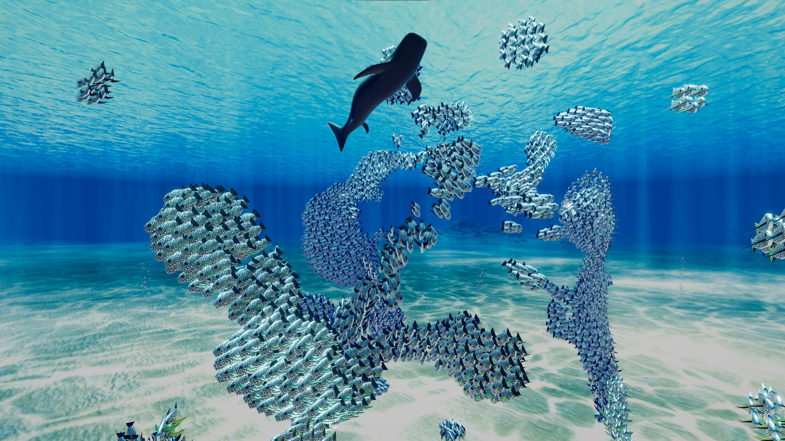

Compute Shader Fish Simulation
I created this boids simulation in Unity 6 as part of my journey learning compute shaders. It was a great stepping stone towards being able to implement complex logic efficiently in compute shaders. I also created shader graphs to give the fish different accent colours, and animate the fish to look as though they were swimming.
Over 8000 fish are simulated in the above video. I would have liked even more, and to this end I implemented GPU instancing. Some information had to be passed from the compute shader through to the vertex and fragment shader, which proved quite challenging alongside the GPU instancing. It turns out that the instancing didn't improve performance at all, because the main thing holding the simulation back is a lack of spacial partitioning.
I also modelled, unwrapped and textured the fish and shark, to gain a bit more experience with the texturing workflow in Blender.
Unreal Engine Boids
My first introduction to the boids algorithm was during a university module in 2023, where we used it as a task to progress our understanding of Unreal Engine. I am proud of the progress I have made since doing this module, especially with the integration of art and finishing touches on projects.
I created this implementation for an assignment using C++ and Blueprints. Many factors affecting the behaviour of the boids can be edited with sliders, such as the weightings of separation, cohesion and alignment.